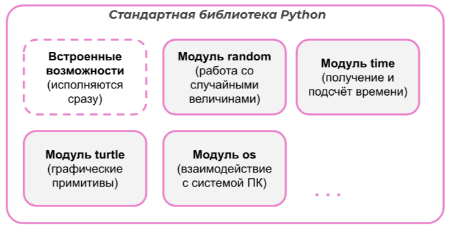

При объявлении функции перечисляются переменные-параметры. Значения присваиваются им позже в момент вызова функции.
При вызове функции в неё передаются аргументы.
return - это ключевое слово, которое возвращает значение из функции. С помощью него можно возвращать одно или несколько значений.
Некоторые модули из стандартной библиотеки Python:
Модуль random - встроенный модуль, предназначенный для генерации случайных величин.
randint(a, b) - позволяет сгенерировать случайное целое число в заданном диапозоне
random - генерирует случайнyю десятичную дробь
Модуль time - встроенный модуль, который предоставляет функции для работы со временем.
time() - возвращает количество секунд с начала эпохи
round(n, d) - округляет число до d-знаков после точки
sleep() - приостанавливает выполнение программы на заданное количество секунд